Iconic Technology · 2000–2010
2000s
Bootleg optical discs and CD burners
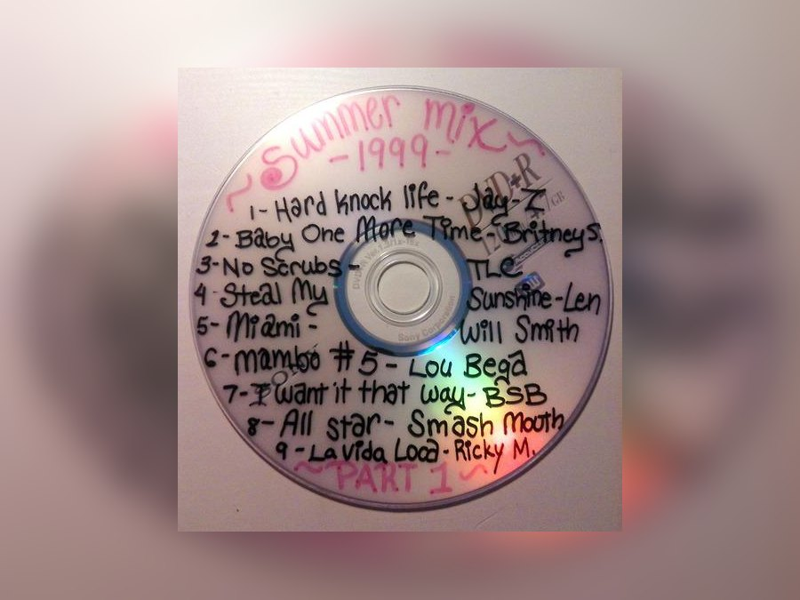
+Add photop-economic-tech-then-1.jpg
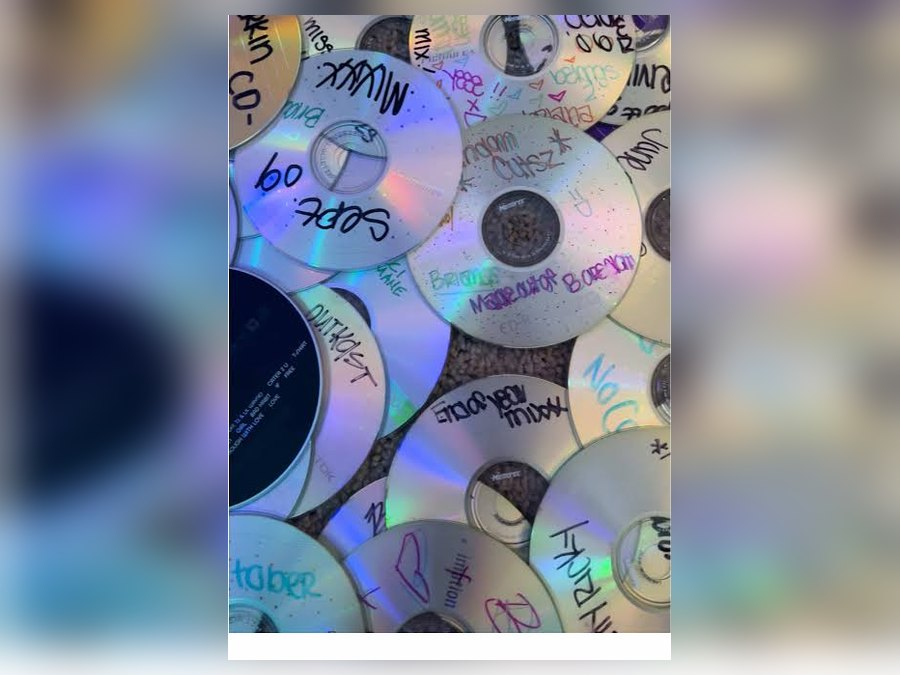
+Add photop-economic-tech-then-2.jpg
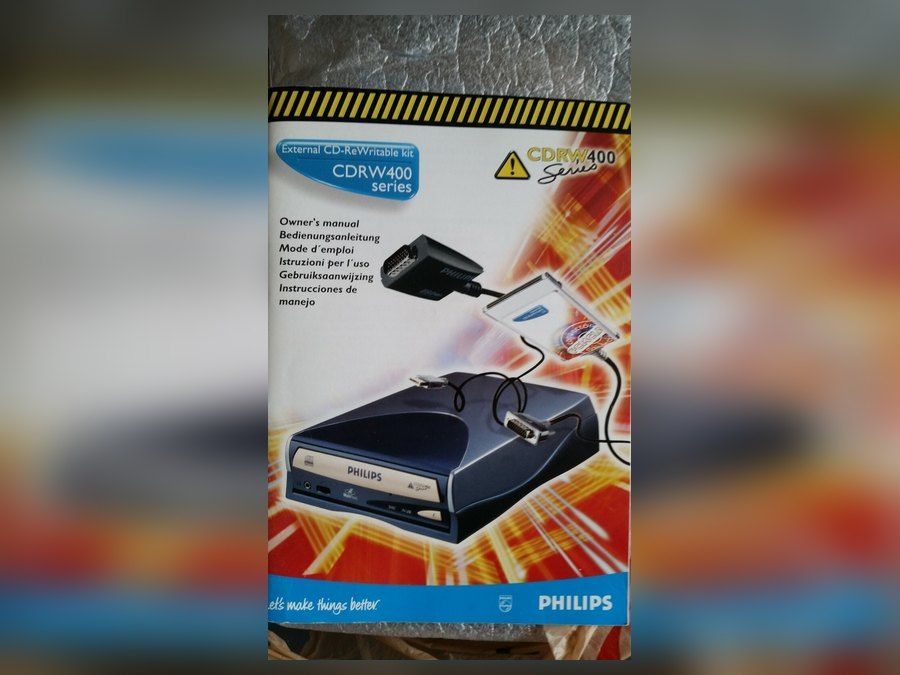
+Add photop-economic-tech-then-3.jpg
Between the noontime dance craze and the TikTok challenge sits one stubborn constant: Filipinos want to belong, to earn and to be heard. Six areas of everyday life are traced here from 2000–2010 to 2020–2026, along with what the earlier decade left behind.
Start exploring ↓How Filipinos earned, paid and sold



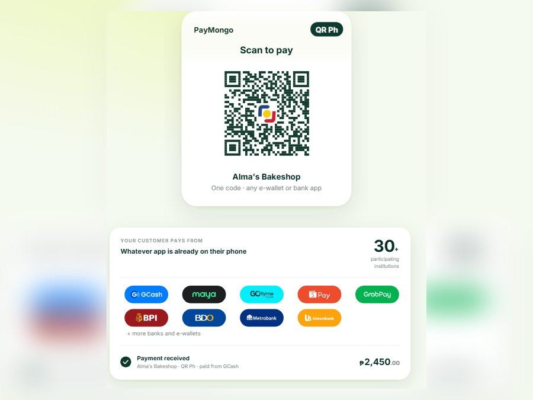

Families leaned on OFW remittances and new BPO jobs, shopped at bargain hubs, and lined up at game shows for a shot at prizes (Araneta, 2006; GMA News, 2011; Osorio, 2010).

Today Filipinos pay by QR code, shop online, and sell or perform on live streams, all while coping with rising prices (Cacho-Laurejas, 2025; Morales & dela Cruz, 2023; Newsbytes.PH, 2023).
Economic life shifted from risky crowds chasing cash prizes (Araneta, 2006) to live-stream storefronts paid for with mobile wallets (Cacho-Laurejas, 2025; Newsbytes.PH, 2023). BPO jobs in the 2000s had already trained Filipinos to earn from screens and foreign clients (Philippine Daily Inquirer, 2018). The trade-off: earning and paying are easier and safer, but many sellers now depend on platforms and must go live daily, while inflation squeezes budgets (Morales & dela Cruz, 2023).
How Filipinos made themselves heard
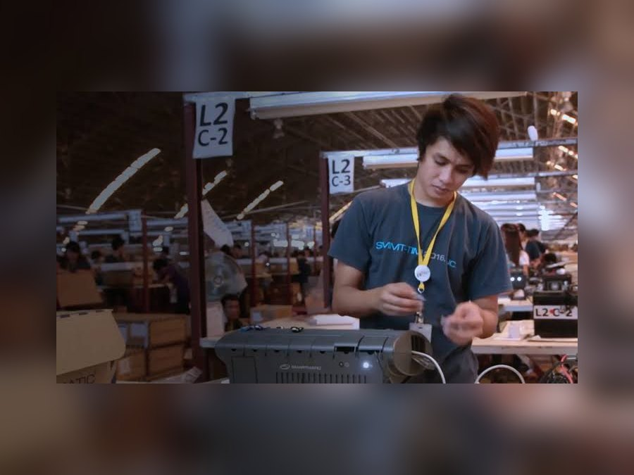
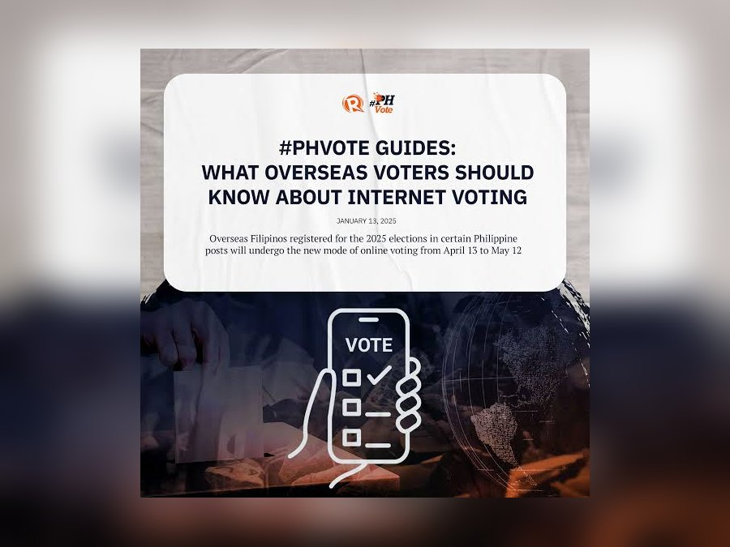
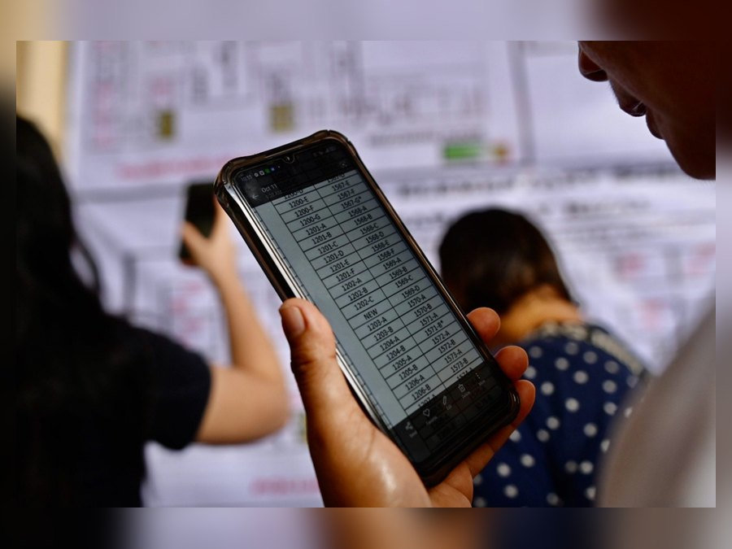
Citizens rallied at EDSA and Mendiola, burned effigies at SONA protests, and even turned a scandal into a ringtone (Adraneda, 2007; Bulatlat, 2008; GMA News, 2007).

Filipinos follow political vloggers, argue in comment sections, and still march when outraged (Flores, 2025; Laqui, 2025).

Campaigning has moved from street rallies to social media feeds, where votes are now courted (Flores, 2025). The 2000s had already shown that pop culture could carry political messages, from ringtones to effigies (Adraneda, 2007; Bulatlat, 2008); today vloggers play that role on a far larger scale. It cuts both ways: more Filipinos can join political debates, but fake news travels faster, prompting hearings and arrest orders (Clapano, 2025).
What Filipinos watched, followed and loved

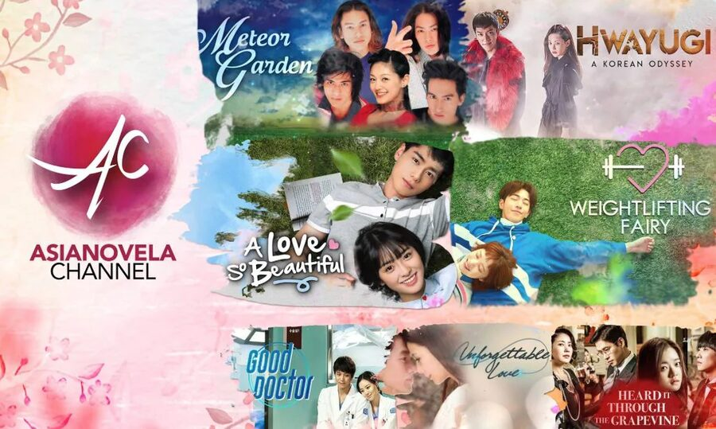
Evenings belonged to telefantasya and dubbed Asianovelas on rival networks, and fans followed foreign idols such as F4 (Anarcon, 2017, 2018).

Viewers stream what they like, when they like, and fill arenas for local groups such as BINI (Bote, 2024; Philippine Daily Inquirer, 2025).

Entertainment moved from waiting for the nightly broadcast to watching on demand and following idols online (Madarang, 2020). The Asianovela and F4 craze of the 2000s had trained Filipinos in the habits of idol fandom (Anarcon, 2018), and that energy now powers homegrown P-pop (Bote, 2024). The payoff is a stronger Filipino identity in pop culture, with fans championing local idols instead of only importing foreign ones.
How Filipinos faced storms, floods and heat

Flooding near Laguna de Bay after Typhoon Ketsana (Ondoy), 2009. Photo: Lito Platon / IRRI, CC BY, via Wikimedia Commons
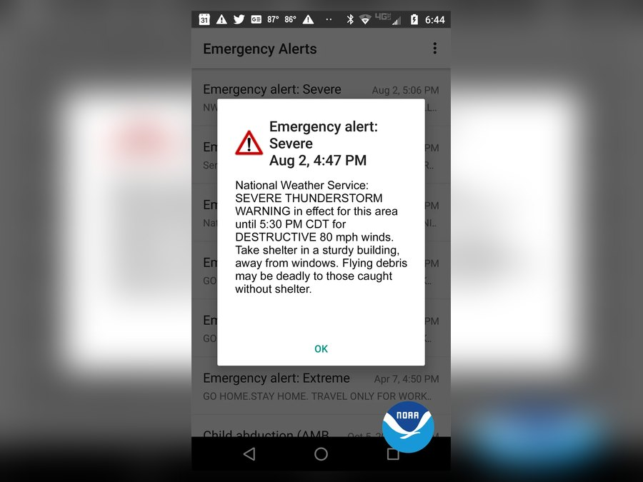
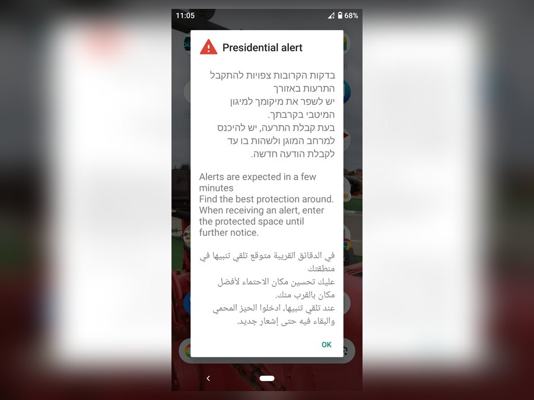
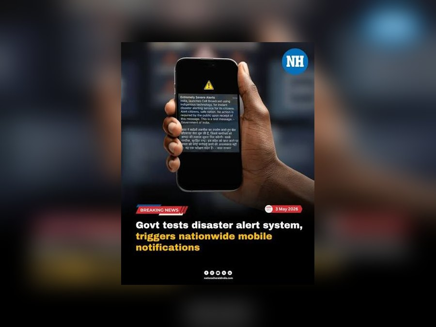
After Ondoy, people followed news of the flood, posted rescue requests online and joined benefit concerts (Godinez, 2009; Palatino, 2009).

Aerial view after Typhoon Ketsana (Ondoy), 28 Sept 2009, Manggahan Floodway area. Photo: Chajedidiah, CC BY 3.0, via Wikimedia Commons
Phones now receive emergency alerts automatically, while fans and celebrities run online donation drives (ABS-CBN News, 2024; Newman, 2018).

Emergency safety moved from waiting for news updates to receiving automatic phone warnings, which the law now requires (Free Mobile Disaster Alerts Act, 2014). Ondoy showed that ordinary Filipinos could organize rescues online (Palatino, 2009), a habit that has grown into today's rapid donation drives (ABS-CBN News, 2024). Response is faster, yet hazards like Taal still displace hundreds of thousands (Associated Press, 2020).
How Filipinos connected, played and proved who they are
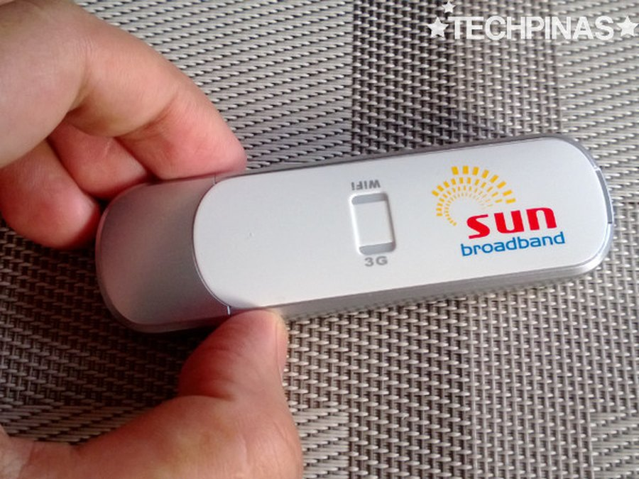
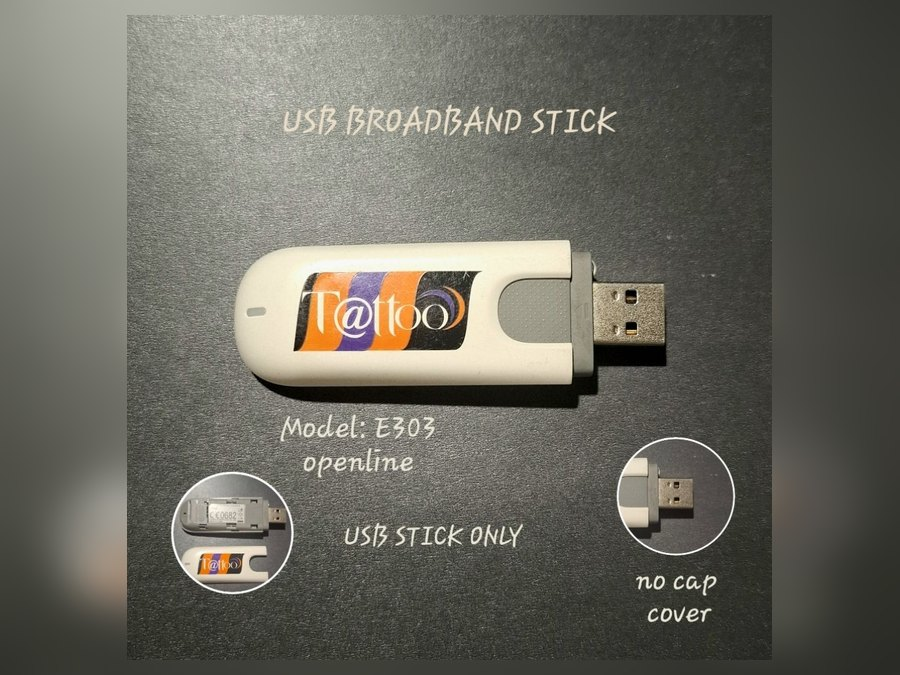
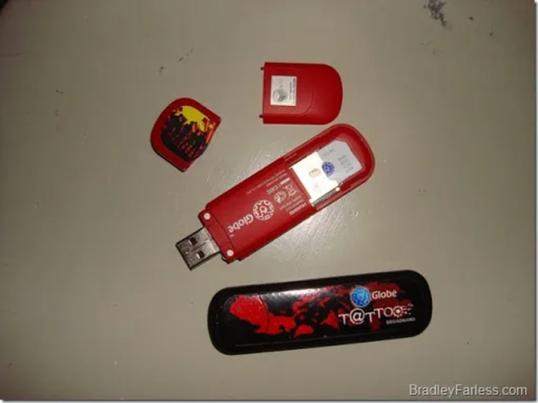
People voted for favorite contestants by SMS and went to LAN shops to get online (Anarcon, 2019; Ocampo, 2001).

Nearly everyone now games on a personal device, registers a SIM, and follows esports stars online (Arasa, 2025; Aurelio et al., 2022; Lukman, 2026).

The basic cellphone that once carried simple text messages has grown into a personal device that does almost everything (Arasa, 2025). Text-voting shows in the 2000s made audiences active participants (Anarcon, 2019), and today Filipino gamers perform for millions of viewers (Lukman, 2026). Access is wider and new careers have opened up, but so have new risks such as scams, which led to SIM registration (Aurelio et al., 2022).
Can you tell which decade each habit belongs to?
Twelve everyday habits from the exhibits are about to flash up. Decide whether each one belongs to 2000–2010 or 2020–2026.
Social
How Filipinos belonged, and stayed in touch
Unlimited texting and group messages
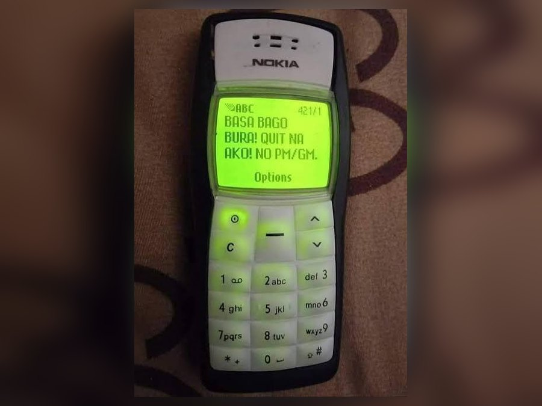
Video-call apps during lockdowns
Television Set the Tempo
Television networks set the social calendar. Families copied the dance crazes of noontime shows, friends stayed close through cheap texts, and young people gathered in comshops (Gil, 2003; Montecillo, 2008; Ocampo, 2001).
References · 3
Everyone Became a Broadcaster
TikTok and similar platforms took over from television as the engine of trends. Everyday Filipinos now film their own videos and join online movements (Kemp, 2025; Mariano, 2020).
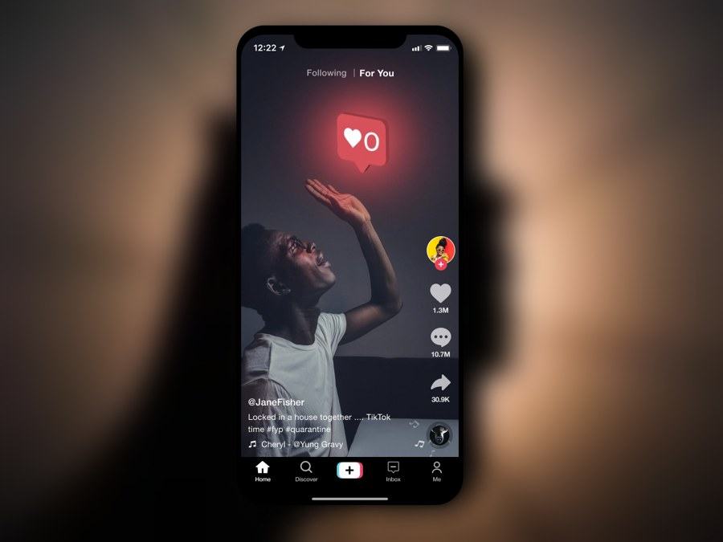
References · 2
Did you know?
Tap a card to flip itFilipinos no longer just watch TV stars; they pick up a smartphone, make their own videos and share them with everyone online (Mariano, 2020). Cheap texting in the 2000s had already put the phone at the center of social life (Montecillo, 2008), and the lockdowns then pushed school, work and hangouts onto screens (Malasig, 2020). The result cuts both ways: anyone can start a trend or a movement, as the community pantries showed (Philippine Daily Inquirer, 2022), yet social life now leans heavily on screens.